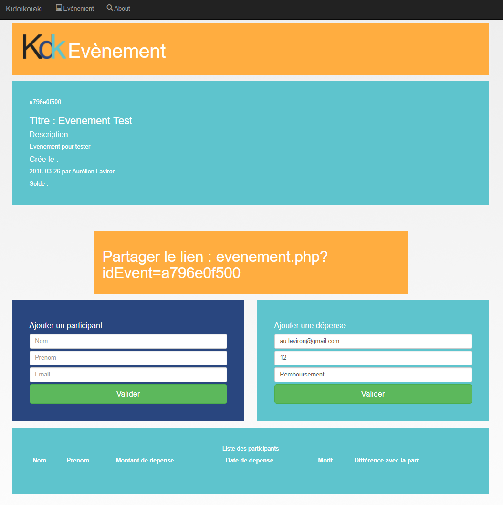

Kidoikoiaki - MVC Webapp
Ce projet a été réalisé lors d'un concours de 24h de code, par équipe de 4. Durant ces 24h, il y a eu une épreuve d'intelligence artificielle (battre un adversaire à un jeu de plateau à deux actions, avancer ou bloquer l'adversaire), une épreuve de sécurité, où l'on devait décoder des information, pénétrer des systèmes, etc. La dernière épreuve était une épreuve de web.
Nous avons donc dû en 8h, créer un site web de gestion de comptes entre amis, ainsi que son identité graphique. Il devait être beau et fonctionnel. Nous avons choisi une architecture en MVC et du PHP comme langage, et enfin une base de donnée MySQL
Outre l'aspect code, ce challenge m'a beaucoup appris à travailler sous pression, et en équipe, ce qui est pour moi le plus important à retenir dans cette expérience.
